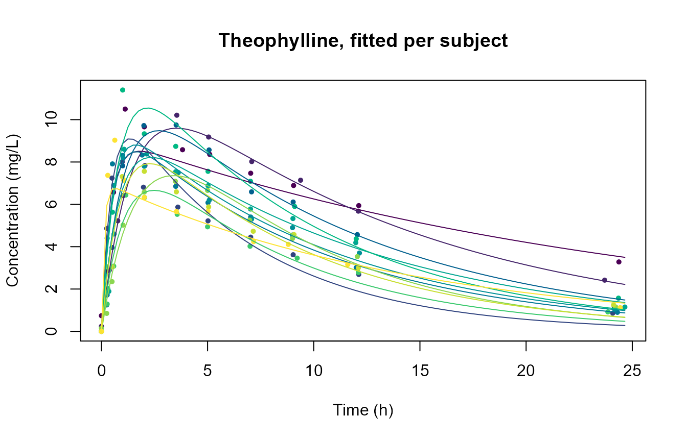
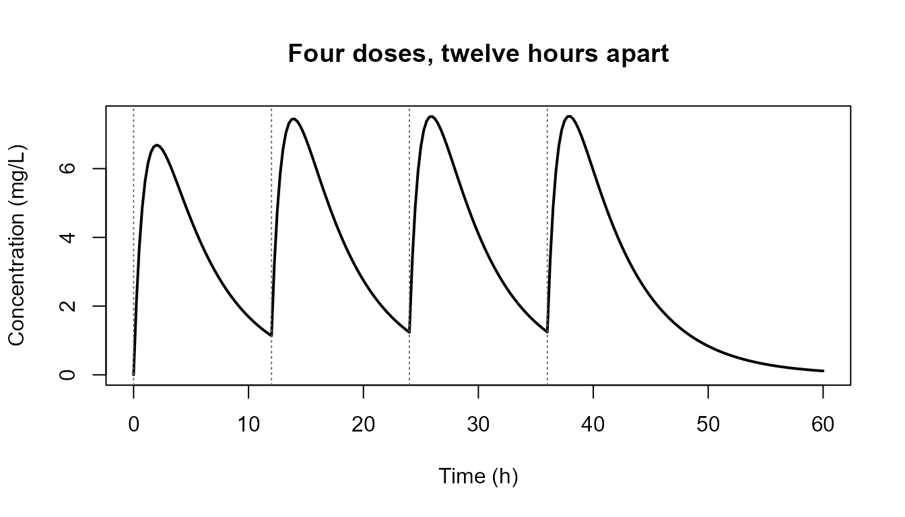
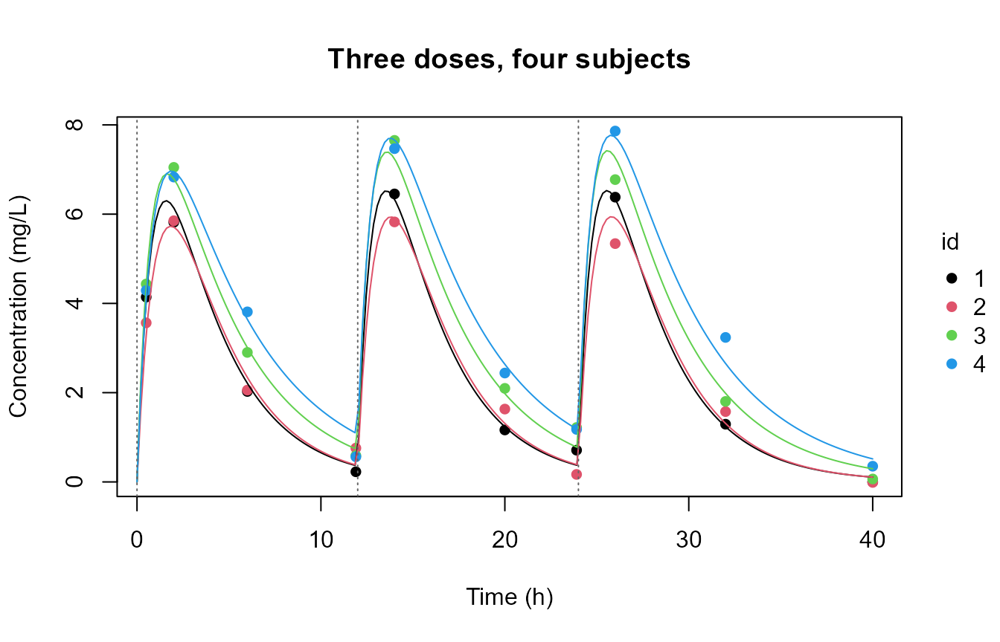

Some models say what the rate of change of a quantity is,
not what the quantity is. A drug moves from a depot into the blood and
is cleared from it; a population grows and is eaten.
frm_ode() puts such a system inside a nonlinear formula, so
the constants of the system are ordinary nonlinear parameters with fixed
effects, random effects and covariates, and the model is fitted by
maximum likelihood like any other frm() model.
Setup
frm_ode() needs the RTMBode package,
which supplies a differentiable interface to the
deSolve integrators. It is not on CRAN:
install.packages("RTMBode", repos = c(
"https://kaskr.r-universe.dev",
"https://cloud.r-project.org"))Everything below is skipped if it is not installed.
A population pharmacokinetic model
The standard one-compartment model with first-order oral absorption
has two states: the amount A still in the depot, and the
concentration C in the central compartment.
A single dose D enters the depot at time zero, so
and
.
Three constants describe a subject: the absorption rate
,
the elimination rate
,
and the apparent volume of distribution
.
All three must be positive, so they are estimated on the log scale.
The system itself is a plain R function in the
deSolve convention: it takes the time, the state vector
and the parameter vector, and it returns the derivatives in a list.
Index y and p by position.
pk_dyn <- function(t, y, p) {
# base c() drops the automatic-differentiation class; this restores it
"c" <- RTMB::ADoverload("c")
list(c(-p[1] * y[1],
p[1] * y[1] / p[3] - p[2] * y[2]))
}datasets::Theoph is the classic example: 12 subjects,
one oral dose of theophylline each, 11 serum concentrations over 25
hours.
d <- datasets::Theoph
d$Subject <- factor(as.character(d$Subject))
head(d, 3)
#> Subject Wt Dose Time conc
#> 1 1 79.6 4.02 0.00 0.74
#> 2 1 79.6 4.02 0.25 2.84
#> 3 1 79.6 4.02 0.57 6.57The model is one bf(nl = TRUE) formula. The body says
how a concentration is produced; the three nonlinear parameter formulas
say how each constant varies between subjects.
form <- bf(
conc ~ frm_ode(pk_dyn,
init = list(Dose, 0),
times = Time,
parms = list(exp(lka), exp(lke), exp(lV)),
group = Subject,
states = c("depot", "central"),
output = "central"),
lka ~ 1 + (1 | Subject),
lke ~ 1 + (1 | Subject),
lV ~ 1,
nl = TRUE
)
fit <- frm(form + gaussian(), data = d, se = TRUE,
start = list(beta = c(0.5, log(0.08), log(0.5))))
summary(fit)
#> Family: gaussian
#> Formula: conc ~ frm_ode(pk_dyn, init = list(Dose, 0), times = Time, parms = list(exp(lka), exp(lke), exp(lV)), group = Subject, states = c("depot", "central"), output = "central")
#> Method: ML nobs: 132
#> Groups: Subject, 12
#> logLik: -191.192 AIC: 394.384 BIC: 411.68
#>
#> Random effects:
#> lka: 1 | Subject
#> Name Std.Dev.
#> (Intercept) 0.68534
#> lke: 1 | Subject
#> Name Std.Dev.
#> (Intercept) 0.35835
#>
#> Coefficients (lka):
#> Estimate Std. Error z value Pr(>|z|)
#> (Intercept) 0.37847 0.20822 1.8177 0.06911
#>
#> Coefficients (lke):
#> Estimate Std. Error z value Pr(>|z|)
#> (Intercept) -2.37288 0.11884 -19.968 < 2.2e-16
#>
#> Coefficients (lV):
#> Estimate Std. Error z value Pr(>|z|)
#> (Intercept) -0.821161 0.026642 -30.822 < 2.2e-16
#>
#> Coefficients (mu):
#> Estimate Std. Error z value Pr(>|z|)
#>
#> Coefficients (sigma):
#> Estimate Std. Error z value Pr(>|z|)
#> (Intercept) -0.229063 0.068604 -3.3389 0.0008411The typical subject’s constants come back on the natural scale, and the derived quantities a pharmacokineticist reads off them follow:
ka <- exp(fixef(fit)$lka); ke <- exp(fixef(fit)$lke)
V <- exp(fixef(fit)$lV)
c(ka = ka, ke = ke, V = V,
half_life = log(2) / ke, # hours
clearance = ke * V) # L/h per kg of body weight
#> ka.(Intercept) ke.(Intercept) V.(Intercept)
#> 1.46004473 0.09321157 0.43992080
#> half_life.(Intercept) clearance.(Intercept)
#> 7.43627852 0.04100571Everything downstream works as usual: predict() on new
times, ranef() for the subject deviations,
confint(), simulate(),
REML = TRUE.
nd <- data.frame(Subject = factor("1", levels = levels(d$Subject)),
Time = seq(0, 25, length.out = 5), Dose = 4.02)
predict(fit, newdata = nd)
#> [1] 0.000000 7.257109 5.663743 4.420213 3.449711The same call on a dense time grid draws the fitted curve for every subject over that subject’s own observations. Each curve carries that subject’s random effects, which is why they differ in both height and shape.
grid <- do.call(rbind, lapply(split(d, d$Subject), function(s) {
data.frame(Subject = s$Subject[1],
Time = seq(0, max(d$Time), length.out = 100),
Dose = s$Dose[1])
}))
grid$conc <- predict(fit, newdata = grid)
tinyplot::tinyplot(conc ~ Time | Subject, data = d, pch = 16, cex = 0.7,
legend = FALSE, xlab = "Time (h)",
ylab = "Concentration (mg/L)",
main = "Theophylline, fitted per subject")
tinyplot::tinyplot_add(conc ~ Time | Subject, data = grid, type = "l")
Each subject is observed once, so the curve and the points share a
colour. The absorption peak moves between subjects because
lka has a random effect.
How the arguments work
frm_ode() runs one solve per group,
over that group’s own observation times, then puts the results back in
the row order of the data.
| Argument | What it is |
|---|---|
| first argument | The derivative function, function(t, y, parms). |
init |
Initial states, one list element per state. |
times |
The observation time of every row. |
parms |
The constants of the system, one list element per constant, in the order the derivative function indexes them. |
group |
The unit that owns one system: a subject, a reactor, a batch. |
states, output
|
State names, and which of them the body returns. |
t0 |
The initial time. Defaults to 0. |
events, event_scale
|
A dosing table, and an estimated multiplier on its amounts. |
method, atol, rtol
|
Integrator and tolerances. |
init and parms are given as lists of
columns, not as one row of values per state. Each
element is either one value per observation or a single value shared by
every group. init = list(Dose, 0) is therefore “the depot
starts at this row’s Dose, the central compartment starts
at zero”. A bare vector such as c(100, 0) is refused,
because it cannot be told apart from one column of two observations.
With no output the result is a matrix with one column
per state, so frm_ode(...)[, 2] also works. Naming the
states and selecting one by name is clearer and is what the example
above does.
Repeated dosing
Theophylline is a single dose, and a single dose is just an initial
condition. A course of treatment is not: the depot is refilled at each
dose time, and the trajectory is the sum of what every dose so far has
contributed. events is the table of those doses.
doses <- data.frame(time = c(12, 24, 36), state = "depot", value = 100)
doses
#> time state value
#> 1 12 depot 100
#> 2 24 depot 100
#> 3 36 depot 100One row per dose. time is when, state is
which compartment (by name if states names them, otherwise
by position), value is how much, and the default
method = "add" puts the amount into the state. Give a row a
positive duration and it becomes an infusion instead,
delivering value at a constant rate over
[time, time + duration]. A group column
restricts a row to one subject; leave the column out and the schedule
applies to every subject.
In NONMEM terms an "add" row is a dosing record,
value is amt, state is
cmt, and duration sets
rate = amt / duration. There is no evid
column, because observations and doses live in two separate tables here:
the rows of data are the observations, the rows of
events are the doses.
Solving directly, with the first dose as the initial condition and three more as events:
tt <- seq(0, 60, by = 0.25)
traj <- frm_ode(pk_dyn, init = list(100, 0), times = tt,
parms = list(1, 0.2, 10),
states = c("depot", "central"), output = "central",
events = doses)
range(traj)
#> [1] 0.000000 7.522638
tinyplot::tinyplot(tt, traj, type = "l", lwd = 2,
xlab = "Time (h)", ylab = "Concentration (mg/L)",
main = "Four doses, twelve hours apart")
abline(v = c(0, doses$time), lty = 3, col = "grey40")
Each peak is higher than the last and the troughs level off, so the course approaches a steady state instead of repeating the first dose. That accumulation is why a dosing schedule cannot be faked with one larger dose.
Inside a formula
A nonlinear body looks up every bare name in data first,
so a column called doses wins. There is no column of that
name here, and a data.frame is not something a column could hold, so the
table is read from the environment of the formula:
conc ~ frm_ode(pk_dyn, init = list(0, 0), times = time,
parms = list(exp(lka), exp(lke), exp(lV)),
group = id, states = c("depot", "central"),
output = "central", events = doses)Writing the table inline says the same thing, and a function of no arguments is the way to read the schedule at fit time:
conc ~ frm_ode(pk_dyn, ..., events = data.frame(
time = c(0, 12, 24), state = "depot", value = 100))
schedule <- function() read.csv("doses.csv")
conc ~ frm_ode(pk_dyn, ..., events = schedule)A fit is otherwise unchanged. Here is a small simulated course of
three doses twelve hours apart, with between-subject variability on
lka and lke:
set.seed(4)
n_id <- 8
tt_obs <- c(0.5, 2, 6, 11.9, 14, 20, 23.9, 26, 32, 40)
dd <- data.frame(id = factor(rep(seq_len(n_id), each = length(tt_obs))),
time = rep(tt_obs, n_id))
ka_i <- exp(rnorm(n_id, 0, 0.3))[as.integer(dd$id)]
ke_i <- exp(rnorm(n_id, log(0.2), 0.25))[as.integer(dd$id)]
super <- function(t, ka, ke, V, amt, at) {
u <- t - at[at <= t]
sum(amt * ka / (V * (ka - ke)) * (exp(-ke * u) - exp(-ka * u)))
}
dd$conc <- vapply(seq_len(nrow(dd)), function(i)
super(dd$time[i], ka_i[i], ke_i[i], 10, 100, c(0, 12, 24)), 0) +
rnorm(nrow(dd), 0, 0.3)
dose_fit <- frm(
bf(conc ~ frm_ode(pk_dyn, init = list(100, 0), times = time,
parms = list(exp(lka), exp(lke), exp(lV)),
group = id, states = c("depot", "central"),
output = "central",
events = data.frame(time = c(12, 24),
state = "depot", value = 100)),
lka ~ 1 + (1 | id), lke ~ 1 + (1 | id), lV ~ 1, nl = TRUE) +
gaussian(),
data = dd, start = list(beta = c(0, log(0.25), log(8))))
unlist(fixef(dose_fit))
#> lka.(Intercept) lke.(Intercept) lV.(Intercept) sigma.(Intercept)
#> 0.04225596 -1.44209990 2.28231919 -1.30575528The truth is lka = 0, lke = -1.61 and
lV = 2.30, with a residual standard deviation of 0.3, which
is -1.20 on the log scale sigma is reported
on.
show <- levels(dd$id)[1:4]
sub <- dd[dd$id %in% show, ]
sub$id <- droplevels(sub$id)
gr <- do.call(rbind, lapply(show, function(s)
data.frame(id = factor(s, levels = levels(dd$id)),
time = seq(0, 40, length.out = 200))))
gr$conc <- predict(dose_fit, newdata = gr)
gr$id <- droplevels(gr$id)
tinyplot::tinyplot(conc ~ time | id, data = sub, pch = 16,
xlab = "Time (h)", ylab = "Concentration (mg/L)",
main = "Three doses, four subjects")
tinyplot::tinyplot_add(conc ~ time | id, data = gr, type = "l")
abline(v = c(0, 12, 24), lty = 3, col = "grey40")
Doses that depend on a parameter
events$value is a numeric column, so it cannot hold
something being estimated. event_scale is the way in: one
value per observation, constant within group, multiplying every amount
in that group. A bioavailability is then an ordinary nonlinear
parameter, free to carry covariates and random effects:
bf(conc ~ frm_ode(pk_dyn, init = list(0, 0), times = time,
parms = list(exp(lka), exp(lke), exp(lV)),
group = id, states = c("depot", "central"),
output = "central",
events = data.frame(time = c(0, 12, 24),
state = "depot", value = 100),
event_scale = 1 / (1 + exp(-logitF))),
lka ~ 1 + (1 | id), lke ~ 1 + (1 | id), lV ~ 1, logitF ~ 1, nl = TRUE)Because scaling is only meaningful for an amount,
event_scale is refused on a table containing
"replace" or "multiply" rows.
An observation at a dose time is the trough
An observation whose time equals a dose time reads the state
before that dose, which is the pre-dose sample a study
protocol asks for. That also covers an observation at t0
when a dose is given at t0: it reads init. If
you want the post-dose value, ask for a time just after.
How the doses are applied
frm_ode() does not hand the table to
deSolve’s own events argument. It splits
the integration at the event times instead, and chains one solve per
interval, carrying the state across the break itself.
That is a correctness requirement. RTMBode
integrates an augmented system that carries the derivative of each state
with respect to each parameter alongside the states. A deSolve event
jumps the state and leaves those derivatives untouched, which is right
for an addition and wrong for the other two methods: measured against
finite differences, "replace" and "multiply"
came out 42% and 59% off. Splitting the solve is exact for all three,
and it is what makes event_scale possible at all.
The price is one solve per dosing interval per group. A twice-daily regimen over a fortnight is 28 solves per subject, not one.
Three things that will bite
A covariate must not vary inside a group
frm_ode() reads each constant off the group’s
first row, because one solve has one set of constants.
A covariate that changes between an early and a late observation of the
same subject therefore describes a model this helper cannot solve, and
it is refused by name at frame assembly:
d$phase <- factor(ifelse(d$Time <= 2, "early", "late"))
frm(bf(conc ~ frm_ode(pk_dyn, init = list(Dose, 0), times = Time,
parms = list(exp(lka), exp(lke), exp(lV)),
group = Subject, output = 2L),
lka ~ 1 + (1 | Subject),
lke ~ 1 + phase + (1 | Subject), # varies within Subject
lV ~ 1, nl = TRUE) + gaussian(), data = d)
#> Error: Nonlinear parameter 'lke' is a dynamics input of frm_ode() but
#> is not constant within 'Subject': phaselate. ...A covariate that is constant within a subject, such as weight or
treatment arm, is the intended case: lV ~ 1 + Wt is
fine.
Without the check the fit is quietly wrong rather than loud. The coefficient stays at its starting value, the log-likelihood does not move, and the only symptom is an indefinite Hessian.
Only adaptive integrators
A fixed-step integrator run at the default number of steps does not
solve the system to the tolerance the likelihood is defined at, so it
returns a different likelihood, not a noisier one: on the probe
data rk4 reported -63.93 where lsoda,
lsode, adams and ode45 all
reported -60.46 to seven digits. frm_ode() refuses
method = "rk4" and method = "euler". The
default "lsoda" is both the fastest and the quietest of the
adaptive methods.
Keep the system small
Each group’s system must be small. Above roughly eight states in one
system, the second-order derivative path that the Laplace approximation
needs starts returning NaN gradients, and with some
integrators the process crashes. frm_ode() warns past that
point. This is why groups are solved one at a time and never stacked
into one large system, even though stacking would look like the obvious
optimization.
Compartment models live far below the ceiling, so in practice this only means: do not try to fold the subjects into the state vector yourself.
Cost
The tape is built once, but every gradient evaluation replays one
adjoint solve per group, so the cost is linear in the number of groups
and does not shrink with tape reuse. For the two-state model above,
eight timepoints per subject, a whole frm() call including
sdreport():
| subjects | rows | with frm_ode()
|
with the closed form |
|---|---|---|---|
| 6 | 48 | 1.6 s | 0.05 s |
| 12 | 96 | 3.5 s | 0.06 s |
| 25 | 200 | 8.3 s | 0.08 s |
| 50 | 400 | 19.9 s | 0.11 s |
About 0.4 s per subject. A 200-subject population model is a couple of minutes. If your system has a closed-form solution, write that instead: it gives the same answer roughly a hundred times faster.
What is out of scope
Time-varying input other than dosing. A branch on
time inside the derivative function does not work, and it is worth
knowing why. RTMBode tapes that function once, so
t is an automatic-differentiation value inside it. Writing
if (t < t_end) rate else 0 raises
Error: Comparison is generally unsafe for AD typeswhich is the good outcome. An approxfun() forcing table
is the bad one: it silently returns the value at the taping point, so
the model you fit is not the model you wrote. Smooth arithmetic in
t, such as p[2] * exp(-p[3] * t), is fine. A
piecewise-constant input belongs in events as an infusion,
where it rides along as a parameter over each interval and is
differentiated exactly. deSolve’s own forcings argument is
not reachable through RTMBode.
Estimated event times. Lag times, estimated inter-dose intervals and estimated observation times are not supported. The event times decide where the solve is split, and that is settled before the tape is built.
Steady-state dosing records. There is no equivalent
of NONMEM’s ss/ii: write out the doses that
led to the steady state, or start the solve from a steady-state initial
condition you compute yourself.
predict(se.fit = TRUE) is not available for any
nonlinear predictor, frm_ode() included. Ask for a
nonlinear parameter instead, with
predict(dpar = "lka").
Failed solves
Mid-optimization the optimizer probes extreme rate constants, and a
solve can fail there. on_error and penalty say
what to do about that, but they reach less far than they look like they
do, and the difference is worth knowing before you rely on them.
While fitting, most failures cannot be caught. The
body runs on the automatic-differentiation tape. There
RTMBode::ode() returns an AD object and raises no R error
when a trajectory goes bad, and RTMB refuses comparison on AD types, so
nothing can test the result for NaN. A diverging region of
the parameter space therefore reaches you as the optimizer’s own
warning,
Warning: NA/NaN gradient evaluationand on_error = "error" will not name the group. Two
failures are still caught on the tape: an integrator that gives up and
returns fewer time points than it was asked for, and an R error raised
by your derivative function.
Everywhere else every check applies.
predict(), simulate(),
residuals(), a direct call to frm_ode(), and a
fit whose init and parms contain no estimated
parameter are ordinary numeric arithmetic. There a failed solve is
detected, and by default its rows are filled with
penalty.
A penalty is never written silently. frm_ode() warns and
names the groups, and frm_ode_failures() reads the record
back afterwards:
p <- predict(fit, newdata = nd)
#> Warning: frm_ode(): the solve failed for 1 of 3 groups (2). Their rows
#> hold penalty = 1e+06, not a solution. ...
frm_ode_failures()
#> $groups
#> [1] "2"Those rows are missing values dressed as numbers. Treat them as missing.
To localize an NA/NaN gradient from a fit, call
frm_ode() yourself at the suspect parameter values with
on_error = "error". Numerically it will name the group that
cannot be solved.
Solver warnings from deSolve (“corrector convergence
failed repeatedly”, “exceeded maxsteps”) during a fit are normal noise
from those probing steps. Judge the fit by diagnose() and
the gradient at the optimum, not by whether the solver complained on the
way.